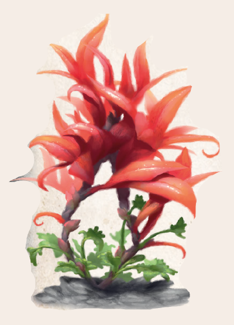

Kaum spannhoch ist Rahjalieb und wächst in dichten Gruppen von bis zu einem Dutzend Pflanzen. Dabei zieht es den Schatten von Bäumen und Büschen vor und ist niemals in direkter Sonne anzutreffen. Es gedeiht in Wald, Wiesen und Sumpf in ganz Aventurien südlich von Festum, besonders häufig kommt es aber im Regenwald vor. Von Ingerimm bis Peraine blüht es und zeigt dann hübsche rosafarbene Blumen, bei denen fünf gedrungene, herzförmige Blütenblätter die gelben Staubfäden umstehen. Zwischen den einzelnen Herzchen ragen an bis zu anderthalb Fingern langen, dünnen Stängeln weitere, knotenförmige Blüten aus dem Köpfchen. Das Blattwerk ist sattgrün und gekräuselt, ähnlich dem der Petersilie.
Eben jene Blätter haben eine zuverlässig empfängnisverhütende Wirkung. Zudem wird dem Rahjalieb eine luststeigernde Wirkung nachgesagt, und an manchen Adelshöfen gibt es Dutzende abenteuerliche Rezepte, um das eine mit dem anderen zu verbinden - häufig ohne jeden Erfolg, denn nur wenige beherrschen die Kunst, wirkungsvolle Rahjaica herzustellen. Wird das Kräutlein jedoch roh genossen, entfaltet sich die luststeigernde Wirkung bei allen Geschlechtern gleichermaßen. Für eine garantierte Empfängnisverhütung müssen 12 Blätter frisch eingenommen werden. Weit gebräuchlicher ist jedoch der Rahjaliebtee. Dafür werden die Blattspitzen getrocknet und mit heißem Wasser aufgekocht. Rahjalieb wird häufig als Zutat für Liebestränke verwendet.
Alternative Namen: Levthanstreu, Rote Rettung, Unschuld
Verbreitung:
Landschaftstyp: Grasländer, Heiden und Steppen, Sümpfe, Marschen und Moore, Wälder, Regenwälder (letzteres besonders häufig)
Regionen: Überhoher, Mittelhoher und Halbhoher Regenwald, Regengrüner Wald, Nebelwald, Strandwald, Mittelländische Wälder (gemäßigtes, tobrisches und yaquirisches Klima), Immergrüne Wälder (Südosten), Nördliche und Südliche Feuchtländer, Mittelländische und Südliche Grasländer und Steppen
Suchschwierigkeit: 0
Bestimmungsschwierigkeit: +1
Anwendungen: 1/1/2/2/3/3
Wirkung:
Roh:
Berührung: keine
Einatmung: keine
Verzehr: Rahjalieb verhütet für 1W3+1 Tage die Empfängnis bei Kulturschaffenden.
Kann auch aus getrockneten Blättern als Tee genossen werden.
Achaz sind immun gegen diese Wirkung.
Verarbeitet: noch keine Rezepte bekannt
Preis: 1 / 1,5 Silbertaler
Rezepte:
noch keine bekannt
Alltagsarzneien und Volksbrauchtum:
Viele Bauern glauben, Rahjalieb wirke nicht nur auf Kulturschaffende wie Menschen, Elfen, Zwerge und Orks, sondern ebenso auf die meisten warmblütigen Tiere.
Deshalb wird auf und um Weideflächen, manchmal gar ganze Dörfer, weitläufig Rahjalieb entfernt, um die Fruchtbarkeit des Viehs nicht zu gefährden.
Auch Schauergeschichten von langfristiger Unfruchtbarkeit und Impotenz bei regelmäßigem Verzehr oder nur Körperkontakt werden in traviatreuen Gegenden gerne erzählt.
Haltbarkeit:
Roh: siehe Haltbarmachung